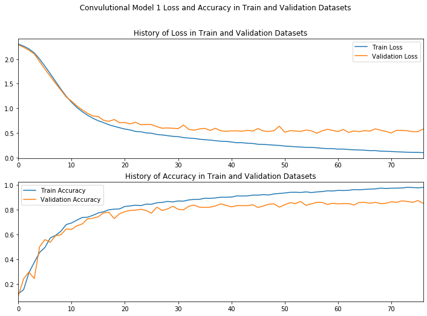
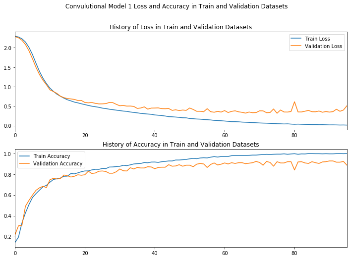
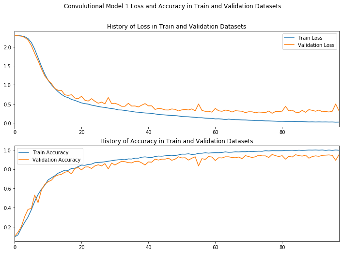
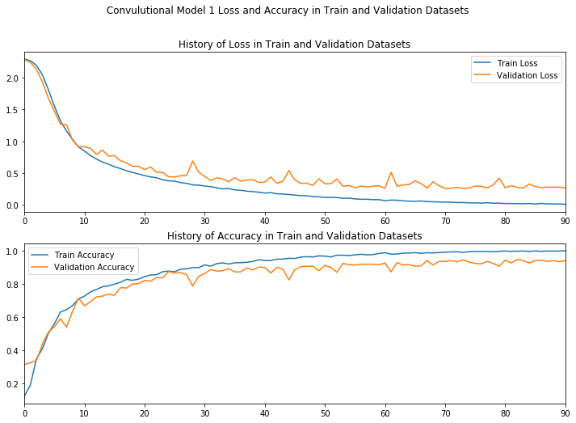

In [6]: runfile('C:/Users/Muhammad.Bilal/Downloads/Sign-Language-Digits-Recognition/DL_Assignment_3.py', wdir='C:/Users/Muhammad.Bilal/Downloads/Sign-Language-Digits-Recognition')
(2062, 64, 64)
(2062, 10)
[INFO]:Convolutional Model 1 created...
[INFO]:Convolutional Model 1 compiled...
[INFO]:Convolutional Model 1 training....
Epoch 00077: early stopping
[INFO]:Convolutional Model 1 trained....
[INFO]:Train Accuracy:0.965
[INFO]:Validation Accuracy:0.850

In [7]: runfile('C:/Users/Muhammad.Bilal/Downloads/Sign-Language-Digits-Recognition/DL_Assignment_3.py', wdir='C:/Users/Muhammad.Bilal/Downloads/Sign-Language-Digits-Recognition')
(2062, 64, 64)
(2062, 10)
[INFO]:Convolutional Model 1 created...
[INFO]:Convolutional Model 1 compiled...
[INFO]:Convolutional Model 1 training....
Traceback (most recent call last):
File "<ipython-input-7-382ddfce3dc7>", line 1, in <module>
runfile('C:/Users/Muhammad.Bilal/Downloads/Sign-Language-Digits-Recognition/DL_Assignment_3.py', wdir='C:/Users/Muhammad.Bilal/Downloads/Sign-Language-Digits-Recognition')
File "C:\anaconda3\lib\site-packages\spyder_kernels\customize\spydercustomize.py", line 827, in runfile
execfile(filename, namespace)
File "C:\anaconda3\lib\site-packages\spyder_kernels\customize\spydercustomize.py", line 110, in execfile
exec(compile(f.read(), filename, 'exec'), namespace)
File "C:/Users/Muhammad.Bilal/Downloads/Sign-Language-Digits-Recognition/DL_Assignment_3.py", line 104, in <module>
trained_model_1=Evaluate_CNN_Model(model=model, modelName=1)
File "C:/Users/Muhammad.Bilal/Downloads/Sign-Language-Digits-Recognition/DL_Assignment_3.py", line 59, in Evaluate_CNN_Model
history=model.fit(X_train, Y_train, validation_data=(X_test, Y_test), callbacks=callbacks,epochs=epochs, verbose=0)
File "C:\anaconda3\lib\site-packages\keras\engine\training.py", line 1239, in fit
validation_freq=validation_freq)
File "C:\anaconda3\lib\site-packages\keras\engine\training_arrays.py", line 196, in fit_loop
outs = fit_function(ins_batch)
File "C:\anaconda3\lib\site-packages\tensorflow_core\python\keras\backend.py", line 3727, in __call__
outputs = self._graph_fn(*converted_inputs)
File "C:\anaconda3\lib\site-packages\tensorflow_core\python\eager\function.py", line 1551, in __call__
return self._call_impl(args, kwargs)
File "C:\anaconda3\lib\site-packages\tensorflow_core\python\eager\function.py", line 1591, in _call_impl
return self._call_flat(args, self.captured_inputs, cancellation_manager)
File "C:\anaconda3\lib\site-packages\tensorflow_core\python\eager\function.py", line 1692, in _call_flat
ctx, args, cancellation_manager=cancellation_manager))
File "C:\anaconda3\lib\site-packages\tensorflow_core\python\eager\function.py", line 545, in call
ctx=ctx)
File "C:\anaconda3\lib\site-packages\tensorflow_core\python\eager\execute.py", line 61, in quick_execute
num_outputs)
KeyboardInterrupt
In [8]:
In [8]: runfile('C:/Users/Muhammad.Bilal/Downloads/Sign-Language-Digits-Recognition/DL_Assignment_3.py', wdir='C:/Users/Muhammad.Bilal/Downloads/Sign-Language-Digits-Recognition')
(2062, 64, 64)
(2062, 10)
[INFO]:Convolutional Model 1 created...
[INFO]:Convolutional Model 1 compiled...
[INFO]:Convolutional Model 1 training....
Epoch 00096: early stopping
[INFO]:Convolutional Model 1 trained....
[INFO]:Train Accuracy:0.979
[INFO]:Validation Accuracy:0.886

In [9]: runfile('C:/Users/Muhammad.Bilal/Downloads/Sign-Language-Digits-Recognition/DL_Assignment_3.py', wdir='C:/Users/Muhammad.Bilal/Downloads/Sign-Language-Digits-Recognition')
(2062, 64, 64)
(2062, 10)
[INFO]:Convolutional Model 1 created...
[INFO]:Convolutional Model 1 compiled...
[INFO]:Convolutional Model 1 training....
Epoch 00098: early stopping
[INFO]:Convolutional Model 1 trained....
[INFO]:Train Accuracy:0.999
[INFO]:Validation Accuracy:0.949

In [10]: runfile('C:/Users/Muhammad.Bilal/Downloads/Sign-Language-Digits-Recognition/DL_Assignment_3.py', wdir='C:/Users/Muhammad.Bilal/Downloads/Sign-Language-Digits-Recognition')
(2062, 64, 64)
(2062, 10)
[INFO]:Convolutional Model 1 created...
[INFO]:Convolutional Model 1 compiled...
[INFO]:Convolutional Model 1 training....
Epoch 00091: early stopping
[INFO]:Convolutional Model 1 trained....
[INFO]:Train Accuracy:0.999
[INFO]:Validation Accuracy:0.939

In [11]: 9